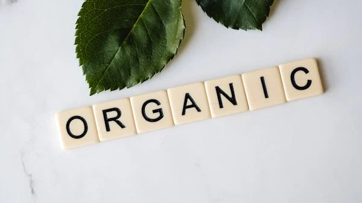

🌱 Organic Farming: A Green Revolution Returning to Nature
With the world rapidly industrializing and a growing population, we've increased food production—but at the cost of soil fertility, environmental balance, and human health. In this scenario, organic farming is no longer just an alternative—it's a necessity.
Read more...
